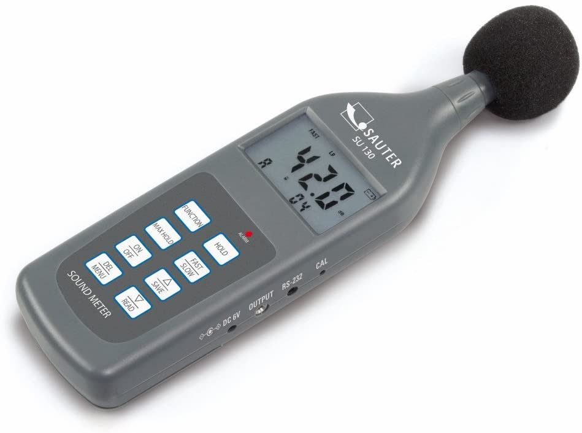

¿Qué es el sonido?
Según la RAE, el sonido es "sensación o impresión producida en el oído por un conjunto de vibraciones que se propagan por un medio elástico, como el aire".

Contaminación acústica
La contaminación atmosférica no es la única que tiene efectos perjudiciales para los seres vivos del planeta.
La contaminación acústica, según la Organización Mundial de la Salud (OMS), es uno de los factores ambientales que provoca más problemas de salud. Solo en Europa, según la Agencia Europea del Medio Ambiente, causa al año 16.600 muertes prematuras y más de 72.000 hospitalizaciones.
Si es perjudicial para los humanos, también lo es para los animales. Según el servicio de Parques Nacionales de Estados Unidos, la contaminación acústica tiene un gran impacto ambiental y notables efectos adversos en la vida salvaje. De hecho, según los expertos, el ruido puede perturbar los patrones de reproducción, amamantamiento e, incluso, contribuir a la extinción de algunas especies.
La OMS define como ruido cualquier sonido superior a 65 decibelios. En concreto dicho ruido se vuelve dañino si supera los 75 db y doloroso a partir de los 120 db. En consecuencia, este estamento recomienda no superar los 65 db durante el día e indica que para que el sueño sea reparador el ruido ambiente nocturno no debe exceder los 30 db.
En la siguiente tabla se recogen algunos ejemplos de los decibelios recogidos en diversas circustancias:
| Decibelios | Ejemplo |
|---|---|
| 0 dB | Umbral de audición |
| 10 dB | Respiración tranquila |
| 20 dB | Biblioteca |
| 40 dB | Conversación |
| 50/60 dB | Aglomeración de gente / Lavavajillas antiguo |
| 70 dB | Aspiradora |
| 80 dB | Tren |
¿Cómo se mide el sonido?
El sonómetro es un instrumento de medida que sirve para medir niveles de presión sonora. En concreto, el sonómetro mide el nivel de ruido que existe en determinado lugar y en un momento dado. La unidad con la que trabaja el sonómetro es el decibelio. Sea del tipo que sea, básicamente, el sonómetro está formado por:
- Un micrófono con una respuesta en frecuencia similar a la de las del oído humano, generalmente, entre 8 Hz y 22 KHz
- Un circuito que procesa electrónicamente la señal
- Una unidad de lectura (led, pantalla digital)

Para el proyecto, nuestros compañeros han elaborado un sonómetro portatil con varios elementos:
- Fuente de alimentación Powerbank que suministra energía
- Caja realizada mediante impresión 3D
- Pantalla oled que muestra la información
- Micrófono con chip que amplifica el sonido. Manda a la placa el sonido transformado en electricidad
- Wemos Placa Arduino con wifi, muy pequeña. Recibe la señar eléctrica y la transforma en código binario.
- Placa de conexión Soporta la placa y la conecta con otros elementos como el micrófono.